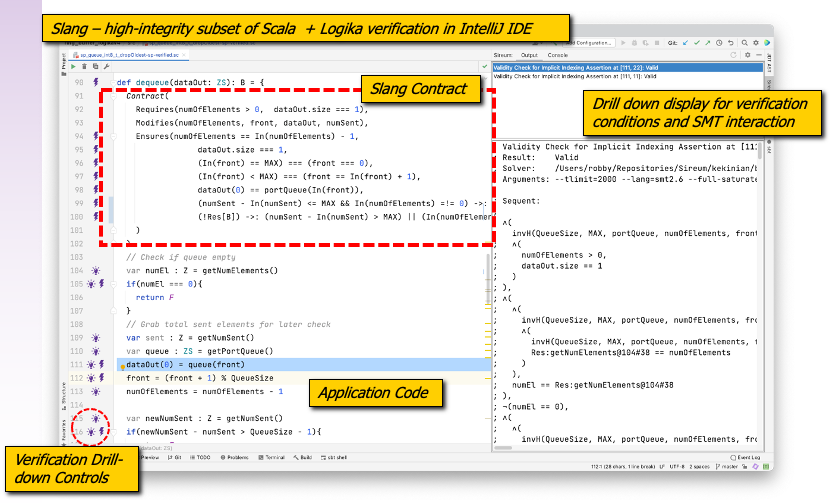

Slang Overview
The Slang Programming Language
Slang is a safety-critical subset of the Scala programming language. Below are some of its key features:
- high-level language, designed for verification,
- comes with user-friendly integrated automated formal verification and property-based testing,
- integratable with widely-used Java/Scala libraries and the JVM ecosystem, as well as the Javascript ecosystem,
- …yet, it can support development of embedded systems, via compilation to lower-level languages like C and Rust and integration with C / Rust libraries.
We delve a bit deeper into each of these in the sections below.
Overall Look and Feel of Development
The typical user will experience using Slang through the Sireum Integrated Verification Environment (IVE). The Sireum IVE is a customization of the IntelliJ IDE – the most popular IDE for Scala development. The Sireum IVE can be automatically installed along with Sireum distribution, and it includes all of the Sireum runtime and other support libraries that are commonly used when programming Slang based applications.
A key feature of the Sireum IVE is the built-in support for Logika verification, as illustrated in the screen shot below.

The screenshot shows a simple Slang method dequeue along with a Logika contract for the method.
Behind the scenes, Logika’s server-based architecture provides a symbolic-execution engine and a suite of SMT solvers that provide “always on” incremental checking of code against the included contracts. As shown in the left gutter, the IVE interface to Logika displays annotations that indicate the state of verification (successful or errors), and the developer can click on these annotations to drill down to see Logika’s underlying deductive reasoning steps. Great effort has been devoted to displaying these reasoning steps directly in terms of the expressions and variables of the program, instead of lower-level analysis engine internals or underlying SMT tool inputs. However, if desired, the developer can also view the actual inputs and outputs of the SMT interactions along with other forms of analysis information.
For Slang/Logika teaching and experimentation, developers can use single file light-weight Slang scripts (based on Scala scripts).
For full development, one can use multiple build systems including the Scala Build Tool (SBT) – the most widely used Scala build framework. Most often, Proyek, Sireum’s own build framework, is used. Proyek provides highly modular build specifications in Slang itself and supports library setups that are compatible with the Maven file/library organization. Proyek generates IntelliJ project and build information which is automatically imported into IntelliJ and hides/automates most of the aspects of the underlying build activities for simple to moderate-size Slang projects.
For IDE-based testing, the Sireum distribution includes ScalaTest (a widely-used Scala unit testing framework) that is fully supported within IntelliJ. The IntelliJ Scala debugger provides full debugging capabilities for Slang.
As with Scala, projects can directly integrate Java source, and a number of large-scale Slang projects with include Slang, Scala, and Java source code.
To support continous integration development practices, Sireum includes significant infrastructure for scripting Slang project builds and regression testing using widely-used frameworks like Jenkins and github automations.
When interfacing with other non-JVM-based languages like C and Javascript, the Sireum infrastructure integrates build infrastructure (like CMake files) for those other languages.
Scala-Based, with Support for Multiple Language Paradigms
There are several reasons why Scala was chosen as the basis for Slang.
Scala aims to blend function, object-oriented, and imperative programming paradigms. While pure functional languages such as Haskell have had good success, even in industry, we believe that most large-scale development (especially for embedded and safety-critical systems) cannot get away from imperative language features.
Thus, Slang inherits from Scala the emphasis on blending programming paradigms. However, Slang includes annotations that allow developers to indicate that a particular paradigm should be syntactically enforced, e.g., in includes annotations that mark different categories of functions as purely functional or limiting side effects to local variables only.
Scala has a rich meta-data facility that allows Slang to easily include contracts and other information within significant parser/compiler modifications. Such annotations are used to tag functions, e.g., as @strictpure – one of the paradigm categories mentioned above.
Finally, one of the main reasons that Scala was chosen as the foundation for Slang is because the primary Scala compiler has an extensible architecture. This enables us to insert custom program transformations phases in the standard Scala compiler to implement the simplified Slang semantics.
High-level Language, Designed for Verification
Despite its many strengths, Scala is a complex language, and thus difficult to highly assure for safety/security. However, its flexible language features (e.g., powerful type inference, macros, etc.), open-source/development, and pluggable compiler pipeline architecture allow one to effectively customize the language.
The Scala features selected for Slang are chosen to simplify automated program verification. While Slang includes basic object-oriented features of Scala such as classes, traits, and objects, Slang omits some of more complicated OO features. Aliasing (where a single object is referenced by multiple variables or object fields) is known to complicate both manual and automated reasoning about programs. Therefore, Slang restricts where aliasing can be introduced – it allows aliasing only at the point of parameter passing in method invocations which is the typical boundary for compositional reasoning in contract-based specification and verification.
To further ease verification, Slang does not use Scala data structure (e.g., collections) library. Instead, it provides its only libraries that are able to strictly separate immutable for mutable structures (with mutable structures being much harder to reason about). Slang distinguishes between mutable and immutable object structures statically. That is, object type mutability is declared as part of type declarations. Immutability is strict in Slang, i.e., immmutable objects cannot refer to mutable ones, and violations of this rule are detected by type checking. Mutable objects, however, can refer to immutable ones. The main benefit of using immutable structures is that they simplify reasoning because aliasing becomes a non-issue. On the other hand, mutable objects are often more convenient to transform via destructive updates for many developers.
As mentioned above, one of the main difficulties in program reasoning is analyzing mutable object structure in the presence of aliasing. Slang reduces this reasoning complexity by adhering to the following runtime invariant property: At any given program point, a mutable object is observationally reachable only by (at most) one access path.
One (intended) consequence is that cyclic object structures are disallowed.1 In general, immutable structures can form directed acyclic graphs while strictly mutable ones can only (at most) form trees. Adherence to the invariant is facilitated by restricting aliasing on mutable objects. The typical language features that introduce aliasing are assignment (including pattern matching variable binding, for-each loop, etc.) and parameter passing. In Slang, assigning a mutable object to a variable (possibly) creates a deep mutable structure copy before updating the variable (if the object has previously been assigned to a variable). This design choice trades off code performance and better memory utilization for ease of reasoning. In many cases, the decrease in performance/utilization is not detrimental to the coded application. When needed, the code can be re- written and optimized (justified by empirical data such as profiling and memory analyses – not simply due to the pursuit of premature optimizations). Using an ownership type system is an alternate approach to tame aliasing (e.g., Rust). However, there is increased specification effort in using ownership types, and in languages that adopt them as the default case, developers must take on the increased specification burden even when the associated payoffs are small.
In short, Slang’s approach to aliasing focuses the reasoning/verification concerns to statically-defined classes of objects (i.e., mutable) at a single well-defined and easily-identifiable program construct (i.e., method invocation), which is also the main location of concern in compositional program verification and formal analyses. Hence, addressing aliasing can go hand-in-hand with other composi- tional assurance approaches such as for ensuring absence of runtime errors (e.g., buffer overflows), functional correctness, and secure information flow.
To summarize the overall approach in obtaining Slang from Scala, we specialized Scala for Slang. We adopted Scala’s syntax (i.e., Slang’s syntax is a proper subset of Scala’s), narrowed down its language features significantly (but still included many powerful features), and tailored its semantics via program transformations implemented in a compiler plugin and Scala macros (thus, enabling Scala/JVM tools to be used for Slang).
Integratable with Well-Developed Ecosystems
Due to Scala’s tight relation with Java, Slang benefits from the Java and Scala ecosystems which have strong tool support such as integrated development environments. Moreover, Slang can be cross-compiled to Javascript via ScalaJS which is handy to develop rich web applications such as standalone and browsable interactive analysis reports and system simulations. In addition, Slang can also be compiled ahead-of-time to native using Oracle’s Graal VM, which avoids JVM boot up time and reduces footprint costs.
Slang offers a clean and unified facility to interoperate with existing libraries and host languages on all of its supported target platforms.
Support for Embedded Systems Development
Due to its careful design, Slang is also effective for programming embedded systems. The Slang embedded subset can be translated to C without garbage collection runtime, which ensures predictable run-time behavior.
For achieving a higher level of assurance, the generated C code can be compiled using the CompCert Verified C compiler. The generated C code can also be used to generate hardware by using available high level synthesis hardware toolchains.